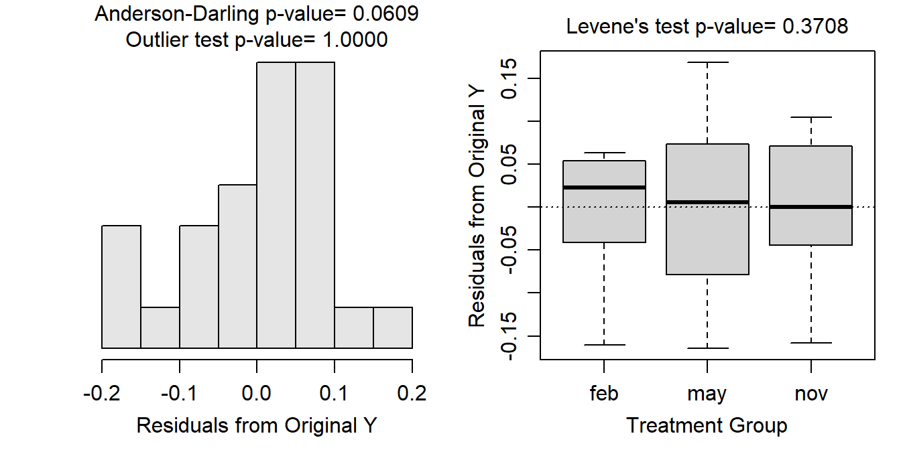

Module 7 One-Way Assumptions
As with most statistical methods, the One-Way ANOVA requires that four assumptions be met so that the calculations made in Modules 5 and 6 mean what we said they would mean. The four assumptions for a One-Way ANOVA are:24
- independence of individuals within and among groups,
- equal variances among groups,
- normality of residuals within each group, and
- no outliers
Each of these assumptions in more detail below.
7.1 Independence
In a One-Way ANOVA the individuals must be independent both within and among groups. In other words, there must be no connection between individuals within a group or between individuals in one group and individuals in other groups.
Independence of individuals is a critical assumption of one-way ANOVAs. Violations of this assumption cannot be corrected.
A lack of independence may include applying multiple treatments to the same individual, having related individuals either within the same group or specifically spread across the groups, or having individuals that are not separated in space or time. Below are examples where there was a lack of independence.
- Researchers measured the self-esteem at three time points – beginning, middle, and end – for 10 people following a specific diet. They wanted to determine if self-esteem increased over the time that individuals were on the diet. This example illustrates a lack of among-group independence because the same 10 people were in each of the “groups” (i.e., beginning, middle, and end time period).
- Zoo keepers were interested in whether the activity rate of lions differed by time of day. For this study, they recorded the activity rate of all five lions at the same random times in the morning, afternoon, evening, and night across several days. This example illustrates a lack of among-group independence because the same lions were recorded in each period. This also illustrates a lack of within-group independence because the activity rates were recorded at the same times for each lion. Thus, the lions may be affecting each others’ activity rates. For example, if one lion gets up to roam around then the other lions may be more likely to get up to roam around as well.
- Researchers with the LoonWatch program wanted to determine if mean density of loons differs among Bayfield, Ashland, and Iron counties. For this they asked local volunteers to record the number of loons they observed on several lakes during the same weekend in June. This example illustrates a lack of within-group independence as different observers were used in each county. It is possible that the observers in one county are more adept at observing loons on their lakes (for whatever reason – they know their lakes better, their lakes are smaller, they are more motivated, they spend more time).
There are methods to detect violations of the independence assumption if the assumption is related to time (e.g., the first situation above), but for most other situations a violation is only detected by careful consideration of the design of the data collection. Violations that are discovered after the data are collected cannot be corrected and the data have to be analyzed with techniques specific to dependent data.25 In other words, designing data collections with independence among individuals is critical and needs to be ascertained before the data are collected.
Independence is generally assessed by considering how the individuals were obtained.
In this course, the data will have already been collected for you and, at times, the description of that data collection may be sparse. To address independence you will be asked to explain why you think dependencies do not exist in the data collection. This may take several sentences. Examples will be provided below and in future analyses.
7.2 Equal Variances
The variances among groups must be equal because the estimate of MSWithin is based on pooling estimates across the groups. In other words, if the variances among each group are equal, then the variance (or MS) for each group is an estimate of the overall MSWithin. If the variances are equal across groups then combining the variances from each group provides a robust estimate of the overall variance within groups.
Equal variances among groups is a critical assumption of a one-way ANOVA. Violations of this assumption should be corrected.
The assumption of equal variances can be tested with Levene’s homogeneity of variances test.26 The hypotheses tested by Levene’s test are
\[ \begin{split} \text{H}_{\text{0}} &: \sigma_{1}^{2}=\sigma_{2}^{2}=\cdots=\sigma_{I}^{2} \\ \text{H}_{\text{A}} &: \text{At least one pair of variances differ} \end{split} \]
Thus, a p-value less than α means that the variances are not equal and the assumption of the one-way ANOVA has not been met.27
The equality of variances may be visually examined with a boxplot of full model residuals28 by group. If the “boxes” on this boxplot are not roughly the same, then the equal variances assumption may be violated. I will usually examine the boxplots rather than use a Levene’s Test when the sample size is very large because Levene’s test can be hyper-sensitive with large samples sizes (i.e., reject H0 of equal variances when the variances are not practically different).
7.3 Normality
The normality of residuals WITHIN each group is difficult to test because there may be many groups being considered or relatively few individuals in each group. Thus the normality of all residuals taken as a whole is often tested. As most linear models are resilient to slight departures from normality, it is thought that if all of the residuals as a whole appear approximately normal then the residuals within each group are likely “normal enough.”
A one-way ANOVA is resilient to slight violations of the normality assumption. Severe violations of this assumption should be corrected.
Normality is often tested by simply viewing a histogram of residuals or a so-called Q-Q plot. For an adequate sample size, a histogram that is not strongly skewed is probably adequate for a One-Way ANOVA.
The normality of residuals may also be tested with the Anderson-Darling Normality Test.29 The hypotheses for this test are
\[ \begin{split} \text{H}_{\text{0}}&: \text{Residuals are normally distributed} \\ \text{H}_{\text{A}}&: \text{Residuals are not normally distributed} \\ \end{split} \]
An Anderson-Darling p-value greater than α indicates that the residuals appear to be normally distributed and the normality assumption is met. An Anderson-Darling p-value less than α suggests that the normality assumption has been violated.
The results of an Anderson-Darling test should be interpreted cautiously for both small and very large sample sizes. At small sample sizes, the distribution would need to be wildly non-normal for the Anderson-Darling Test to suggest that it is not normal. At very large sample sizes, very small and insubstantial differences from normality may result in the test indicating that the distribution is not normal. Thus, it is important to always examine the histogram of residuals to decide whether this assumption is adequately met or not.
7.4 No Outliers
The one-way ANOVA is very sensitive to outliers. Outliers should be corrected if possible (usually if there is a data transcription or entry problem) or deleted if it is determined that the outlier is clearly in error or is not part of the population of interest. If the outlier is not corrected or deleted, then the relative effect of the outlier on the analysis should be determined by completing the analysis with and without the outlier present. Any differences in results or interpretations due to the presence of the outlier should be clearly explained to the reader.
A one-way ANOVA is very sensitive to outliers.
Outliers may be detected by visual examination of a histogram of residuals.
Potential outliers can be more objectively detected with externally Studentized residuals,30 which essentially measure how many standard deviations an individual is from its group mean. Studentized residuals follow a t-distribution with dfWithin-1 degrees-of-freedom.31 A p-value for testing whether an individual residual is an outlier or not is calculated by converting the Studentized residual to a two-tailed p-value using a t-distribution. As these p-values are computed for each residual, this process suffers from the “multiple comparison problem” (see Section ??). Thus, the p-values use a Bonferroni method32 to correct for multiple comparisons so that the likelihood of mistakingly identifying an outlier is controlled at a desirable level. If the Bonferroni adjusted p-value for the most extreme residual is less than α, then that individual is considered to be a significant outlier and should be flagged for further inspection as described above.
7.5 Testing Assumptions in R
All plots and tests of assumptions can be completed by submitting the saved lm object from when the One-Way ANOVA was computed to assumptionCheck(). For example, the code below fits the One-Way ANOVA for testing if the mean immunoglobulin levels of New Zealand opossums differs among seasons (the opp data frame was created in Module 6) and then performs the calculations needed to check the assumptions.
lm1 <- lm(imm~season,data=opp)
assumptionCheck(lm1)
For a One-Way ANOVA, assumptionCheck() produces a histogram of residuals with the Anderson-Darling and outlier test p-values on the left and a boxplot of residuals for each group with the Levene’s Test p-value on the right.
In this case the boxes on the boxplot are similarly sized and the Levene’s test p-value (=0.3708) is greater than α suggesting that the group variances are equal. The histogram of residuals is difficult to assess because the sample size is so small, but it does not appear strongly skewed and the Anderson-Darling p-value (=0.0609) is (barely) greater than α, which weakly suggests that the residuals are normally distributed. The histogram does not show any “odd” individuals and the outlier test p-value (=0.0402) is greater than α which suggests that there are not any significant outliers in these data. Thus, the three assumptions that can be tested with the data all appear to be met.
The independence assumption cannot be assessed from the data and must be reasoned through. While there is not much information about this study, I will assume between group independence as there is no suggestion that the same opossums were sampled in each of the three seasons (i.e., no indication that they were tagged or otherwise individually identified). This is particularly clear because the sample size differs across seasons (see table below). I will also assume that there is within-group independence because there is no evidence that the opossums within any given season were somehow related or connected.
xtabs(~season,data=opp)#R> season
#R> feb may nov
#R> 12 7 8Note that the first three are the same three assumptions you learned for a 2-Sample t-test.↩︎
Such methods may include repeated measures ANOVA, mixed-models, and hierarchical models.↩︎
There are a wide variety of statistical tests for examining equality of variances. We will use the Levene’s test in this class because it is common in the literature and simple to implement in most statistical software packages.↩︎
Methods for “working around” this assumption violation are discussed in Module 8.↩︎
Recall that these are the vertical differences between observations and their group mean.↩︎
There are also a wide variety of normality tests. Some authors even argue against the use of hypothesis tests for testing normality and suggest the use of graphical methods instead. For simplicity, the Anderson-Darling normality test will be used throughout this course.↩︎
A residual divided by the standard deviation of the residual, where the standard deviation is computed with that individual removed.↩︎
The extra one is subtracted because the individual residual is not included in the calculation of the standard deviation of residuals.↩︎
An adjusted p-value is computed by multiplying the original p-value by the number of comparisons made (in this case n).↩︎